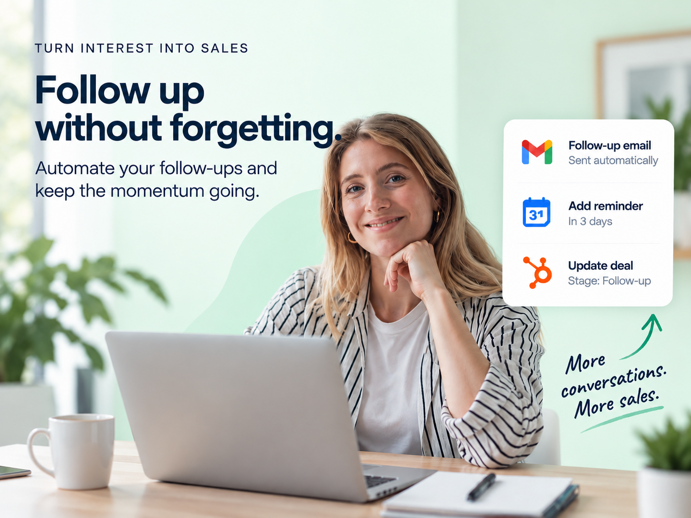

Book a call
Choose a time that works for you.
Book a free strategy call with our team. It is simple, practical and pressure-free.
Free blueprint + strategy call
For coaches, consultants and small teams
Keep warm conversations moving with reminders, timely messages and a CRM that stays current.

Book a call
Book a free strategy call with our team. It is simple, practical and pressure-free.
Explore the blueprint
Walk through the automation, the tools involved and the steps that make it work.
Get personalised advice
Bring your questions and current process. Leave with clear next steps for your setup.
What you get
The problem
After a useful call or enquiry, the next step often gets lost among competing priorities and crowded inboxes.
How it works
Need this adapted?
Book a free 45-minute demo call to discuss different apps, extra steps or done-for-you implementation.
Book Your Free Strategy Call →